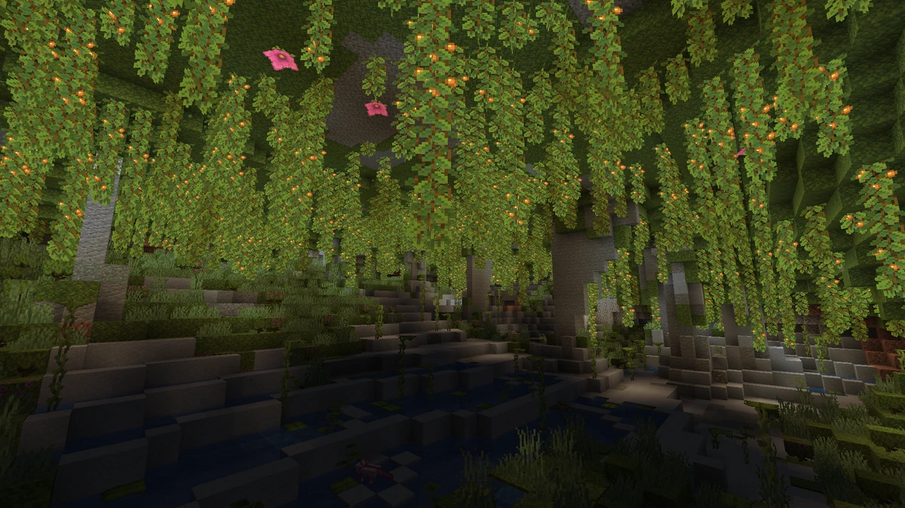

La azalea es un bloque que se puede usar como decoración convertirlo en un árbol interactuando en él con polvo de hueso.
La azalea aparece naturalmente y se puede extraer del bioma subterráneo Cuevas Frondosas.
